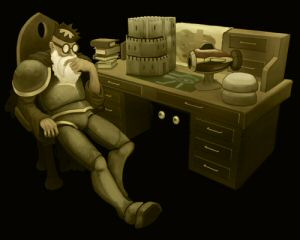

Well! I must say that we have something of a mixed bag of mail this month, and possibly the largest number of letters I've ever seen answered by someone to whom the letter was not addressed. On top of that we have a fascinating image of the Wise Old Man up to his old tricks, and a very confused troll.
Seriously, just get Pete to reply, or do so yourself, and I'll write some books for your wonderful library.
And these books could all be stored in my lovely booksheleves for visitors to read, but NOT take!
But why do you work alone, you're still young, shouldn't you have an apprentice or a venerable master?
Fuzzibloke
AKA The Fuzz
Dear Fuzzibloke,
While it is true that the once great library of Varrock is a bit thin at the moment, I must assure you that it is simply because I have been forced to place a number of very valuable tomes in storage. Most adventurers who pretend to read while idly flicking through rare books don't wash their hands, you know, and old parchment is so very fragile.
I have only recently managed to properly train one of my assistants in the fine art of book restoration, and I hope that his solitary labours will bring fruit soon (I have to lock him up in the back room - library assistants are very slippery and prone to getting drunk and burning books).
This, of course, answers your last question: I do have assistants (quite a number of them, in fact), but as you can tell they're not particularly reliable. It seems all they want to do is read the books to find out how many goblins they have to grill to stop burning weevils, how strong their dragon quill is compared to an onyx inkwell, or some nonsense like that. Once they've found that out they always try to escape. I've asked King Roald a number of times to build me a large dungeon to keep them in, but he always looks at me like I'm a bit funny in the head. Me! Funny in the head! That man has no gratitude; I mean, I taught him to read!
On a related note, just last week I came across a very old book that I think the readers of RuneScape might rather enjoy. It was lodged behind a collection of dusty leprechaun maintenance magazines and in quite poor condition. I have managed to transcribe much of it now, though, and I hope to print a new edition of The Excellent Log of the Journeys and Tribulations of Samuel Scourduel some time in the near future.
Yours with a perspicacious quill,
Reldo
I have what can only be considered as a warranty issue with regards the dragon weapons you so kindly extort vast amounts of cash from us brave fearless adventurers who keep you safe in your beds at night from untold numbers of dastardly monsters and beings that would part you from the sooooo easily 'earn' (lol).
The problem with the few dragon weapons I have, (I like to earn my own weapons rather than buy from dubious sources such pkers) is that the specials extra that comes with these weapons doesn't seem to be that special. For example, I can hit a mean 20 occasionally with my scimmy, (a nice weapon thanks Daga) but when I hit the special button I often get a wimpy 2 or some such low degrading number. I mean I have my pride, fighting some lvl 200 ish monster watched by my hoards of noob fans and phut out comes a lvl 2 hit. Well I ask you talk about embarrassment. So the question, Is this me? Am I wearing the wrong clothing, (I like the Black dragon hide, looks good), have I missed something or is this a manufacturing problem that needs to be addressed. I would write, or pay a 'friendly' visit to the manufactures but unfortunately they seem rather hard to track down, even with my vast skills.
So how do we address this issue, am I eligible for a refund, do I return the weapons as faulty goods. Benign that I am I only have so much patience so a swift reply would be well received.
Yours Sincerely
Ohoaryone
Dear Ohoaryone,
I represent the Consortium of Extra-Planar Merchandise Transferral Specialists (sellers of dragon weapons). I have spoken with my clients and they have asked me to write you this response - hopefully it answers all your questions.
We are sorry to hear that you are unhappy with the item in question and its abilities when used in conjunction with the ‘special’ command. You are, in fact, the first person to complain about my clients' merchandise (normally people are thrilled with the advantages that come with such a finely crafted weapon); thousands of people are currently enjoying the fruits of their labour in the form of dragon weapon-induced ‘special’ attacks, many of which are connecting with their intended targets with gloriously devastating results (just ask the goblin that my dragon scimitar ‘connected’ with yesterday when I caught it trying to steal a redberry pie from my windowsill!).
Unfortunately, the results you are experiencing are beyond my clients' control. They are more inclined to think that the problem is with your method. Do you have a good grip on your weapon? Are you sure that you are wielding it and not some inferior device?
In short, my clients are not going to give you a refund. You may return the weapon if you like, but you will probably find that your attacks improve with practice. Then again, maybe you should rely less on chance: I've always found that the Dagannoth Kings fall down easier if you keep hitting them with things you know will hurt them.
If you wish to take this matter any further, I suggest you learn Latin; it is a graceful language.
…Caveat emptor.
Regards,
C. P. L-F. Carruthers, Esq (LLB)
Legal Consultant - Weapons Division
Carruthers, Landsbottom and Og
Lawyers of Distinction
Dear Miss Schism,
I admire you telling every single person what happened to the bank, but seriously you just sit there, and sit there and sit there! Haven't you ever thought of becoming a great warrior or maybe a spy? look at Kelli the lady who kidnapped the prince of al-kharid! (I am in no way saying you should go kidnap people for money). I am just saying that your life is just boring. Really. It is.
Seriously, Eulilia
P.S. Don't you ever get up and walk around a bit?
Miss Schism,
A chair,
Opposite bank,
Draynor Village
Dearest Eulilia,
Boring? Boring, you say? My dear child, that attitude towards helping the community could bring down empires. To you, perhaps, my work seems mundane and less exciting than that of your average sword-wielding brute, but what I am doing is helping to build the foundations of a better world. Can we seriously let persons such as the Wise Old Man continue to terrorise our streets and our residents? Just look at what I spotted him doing the other day:

You may think of my life as boring. However, I see myself as a guiding light for justice in our fair village; an anchor in the ever-flowing waters of deceit and trickery, and I don’t intend to give up my fight for a fair while yet, I can tell you!
Finally, thank you so much for taking such an interest in my life. One does so often feel that all efforts are in vain when so little appreciation is received. The merest fact that you are aware of my presence fills me with a renewed vigour. I wish you well in your adventures and sincerely hope that in time you will come to learn the value of being a good citizen.
Yours ever-faithfully,
Miss Schism
p.s – I’m so sorry, my dear, but the donation towards the Draynor Manor Restoration Fund that you no doubt included in your correspondence appears to be missing.
i have a few questions to ask u
- why did you become evil? thats the wrong path to take
- if your a chicken why do you look like the roster in falador chicken coop?
- your level is so high but i can kill you in 5 mins without losing that much damagewhy is that?
- when i started killing you a lot you stopped commin to fight me.why?
- are you bored of killing and dieing?
- do you work with zamorak?
- if your a evil chicken why isn't your raw chicken raw evil chicken?
thats all please visit so i can kill you agian and again.
your new enemy shortymainia
- Evil was the only course left, puny featherless being. You kill Evil Chicken's brethren and expect Evil Chicken to come round for tea and pie?
- Ah, you speak of Nigel. Nigel is no friend of Evil Chicken; he is an imbecile and cheats at cards.
- Though you think you have defeated Evil Chicken, Evil Chicken has been rummaging in your mind. Evil Chicken is analysing your brain patterns for man-thoughts that will aid him in his quest for domination.
- Evil Chicken has tired of your taste. Evil Chicken wishes to eat other warriors.
- Sometimes Evil Chicken pecks at the flesh of warriors for Evil Chicken likes the taste. Warriors taste of chicken.
- Zamorak knows of Evil Chicken, and Evil Chicken knows of Zamorak. He keeps a respectable distance, and occasionally leaves seeds out.
- At first taste Evil Chicken tastes like chicken. Wait two weeks, fleshy non-beaked mortal, then let Evil Chicken know how your insides feel.
Evil Chicken will visit in your dreams, Shortymainia, when the tides have turned and you bow down under the yolk of chicken oppression.
All my love,
Evil Chicken.
I understand that the hell rats were made "totally evil man!" by Evil Dave, which is totally evil and all. Since then my cat ate several and became a hell cat, which is "totally eviller man!" But now I've been wondering, did evil Dave make the hell hounds found in RuneScape? Because of if he did he's like totally evil pwnage master man, man! I'm asking all you Hell hounds, hell rats, hell cats and yes you Dave this question, that way we'll know for sure.
Oh and one last question guys, do all of the hell animals ever meet up and talk, or do you have wars against each other since you are the cat, mouse and dog trio?
Yours devilishly, The Totally Evil Tzu Men
Dear Totally Evil Tzu Men,
It sounds like you are part of an EVIL ORGANISATION that I must admit I have never heard of! As writer and editor of the EVIL AND WICKEDLY NAUGHTY NEWSLETTER, it would be great if you and your friends could contribute an article, a poem or a CROSSWORD OF TERROR. The hell rats only pass me claw-print paintings. They have no imagination at all.
It is strange that you should mention hell hounds, TOTALLY EVIL, as I seem to remember making one when I was a small boy. She was my SPANIEL OF UNIMAGINABLE HORROR, and I loved her. She would often stray into the Wilderness, though. I wonder what happened to her?
Unfortunately the hell creatures don't get on too well. The hell cats only come over to eat the hell rats, while the hell hounds get on famously with the hell rats but eat the hell cats. I remember that I once had to get a hell hound, a hell cat and a hell rat across the River Lum in my two-man PEDAL-BOAT OF SUFFERING. It was a nightmare.
As for me, I do not meet with any others that call themselves evil, mainly because mum won't let them stay. Not after Rancorous Ronald and the GREAT SLEEPOVER OF DOOM five years ago. Poor Ronny.
Yours EVILLY,
EVIL DAVE
Why don't you every show your face? I have gone to Falador lots of times and have never seen you. Are you nervous in front of a crowd or something?
Or is something wrong with you, like that King in Miscellania? Or maybe you are busy making plans for a war. I once meet someone who thinks you are creating a completely new, never before seen, Combat Skill! I would like that, though there is little chance of that happening. I also saw someone claiming that you where making a new weapon, something like a Seriphle.
I would Appreciate it if you took control back from Sir Amik Varze. He is really annoying. He wont let the White Knights show me their Swords without it being in Combat, not even Zeno! You know Zeno, the Partisan. Of course you do. Once he tried to show me it, but Varze made him kill me. I did get to see the sword though…
Well, I have nothing left to say to you, your Highness. I will hopefully see you soon.
Your loyal subject,
Dequelier
Dear Dequelier,
Unfortunately, His Royal Highness, King Vallance, is far too busy with matters of state to respond to you in person, and has authorised me to do so on his behalf. The King has specifically requested I inform you that, despite his lack of appearances in recent years, he is a more than capable public orator and is in no way afflicted like the unfortunate King Vargas of Miscellania.
Alas, the King is also not quite the young buck he once was, though his health and welfare are sound, protected by our glorious White Knights as he is, but it does prevent him from inventing a new combat-related skill. Besides, it would be a bit of a brutal pastime for a man of such elevated position, as indeed would be the creation of weapons (Saradomin forbid!), a task that he leaves in our very capable hands. Indeed, in the recent past, the White Knights have employed the use of items as diverse as cabbages and redberry pies in protection of the people of Asgarnia, and our 'goat-staring' technique has come on leaps and bounds.
As regards your concern that our White Knights are not seen to wield their weapons at all times, I would like to highlight the reason for such is that the streets of Falador have never been safer. The guards manning the doors to our white-walled city are more than capable of dealing with what little rabble and riff-raff we do encounter - in fact, the average lifespan of our city guard has increased to an all time high of twenty-seven point six-nine seconds! But fear not, as you have experienced first hand, Falador's White Knights are ready to unsheath their weapons at a moment's notice in self-defence, just as it should be for such honourable and duty-bound warriors.
Yours 'annoyingly',
Sir. Amik Varze
(On behalf of King Vallance)
First, I want to tell you how much I enjoyed your feast of burnt meat when you last gave me burnt meat as a reward..
Anyway, I want to talk about My Arm and my arm. When My Arm was named My Arm, was My Arm named after his arm or your arm or the arm of the troll who named him after his arm or your arm or the arm of the troll who named him My Arm after he bit his arm? If it was My Arm's own arm, did My Arm lose hp when he ate his arm, or gain exp for eating his arm, or did it balance out when he ate his arm, by having lost and gained the same amount of hp from eating his arm? And if it was your arm that My Arm tried to eat, did My Arm hurt your arm when My Arm ate your arm? If it was the arm of another troll, did that troll swing his arm from the harm of My Arm when My Arm ate his arm? Anyway, enough about My Arm, let's talk about my arm. Today, when I was playing draughts with My Arm's arm, I hurt my arm by making an incorrect move with my arm, so I decided to stop using my arm to play games and instead to use my arm to work at a farm.
With Regards,
Cantabilex33
Der Cata...Canta..urr tasty human,
Course yu'z liked Burntmeat's cooking. Burntmeat is the bestest cook out of all trolls. No-one burns meat like Burntmeat. Just need to restock the prison if yu'z wantz sum more.
Posty head has now read your words to Burntmeat three times now and now 'iz head hurts. Trolls is named after the first thing they try to eat. When My Arm'z dad was holdin' 'im My Arm bit 'iz arm. So My Arm got done called My Arm...after his da'z arm. Burntmeat'z head hurt even more now.
Yu'z was playing with My Arm's arm? Last time Burntmeat sawz him he 'ad both. U'z sure it was My Arm'z arm and not wun of My Arm'z armz? He got a crate round ere full of em. Usez 'em to add crunch to Burntmeat'z cooking we duz.
When yu'z was on the farm, with yur arm, did u'z see sum goutweed? Since me an My Arm gotz uz own vegi...vegble..um...green stuff patch uz'z had trubble growin' nuff Goutweed to keep up wiv demand. We fought dat we'z cud get sum humies to bring uz it and den eat 'em. Den we get mealz on wheelz.
Lotz of luv,
Burntmeat da troll
It has been almost a year since I resurrected you, and yet whilst I occasionally emerge from the vast nothingness beneath the earth to ponder what else could lurk still deeper (I could have sworn I saw some sort of demon of flame down there at one point, I shall keep looking for it.), I notice that East Ardrogene still stands, Falador is as pompously Saradoministic as ever, and Varrock has not been thoroughly destroyed since Delrith's attack. I was pleased at Agrith-Naar's recent attempt to resurrect him, but he did it so poorly I had to banish poor Delrith for his own good. The Varrockian Guards would not have been so merciful. Not long after that some idiot monks mistook my protection of Delrith as heroics, and sent me off to deal with Agrith-Naar, an accomplished demon in his own right. While normally I would have left him alone, his banishment is necessary for the defeat of the Culionomancer, whose continued existence would destroy the universe. (As good as this sounds, I keep all my stuff in the universe and prefer it damaged beyond repair rather than destroyed.) After seeing the accomplishments of Agrith-Naar and various other agents of Zamorak, I notice that after an entire year you have yet to raise a finger in the destruction of the nonbelievers. Please get to work, Zamorak wants the world to burn and you hold the torch.
Lord Thgin, loyal servant of Zamorak and traveler of the depths.
Hail Lord Thgin, traveller of the depths,
I write to you from the north on behalf of my liege and master, Lord Hazeel.
My lord has called upon me to write to you and relay his assurances that all is going to plan; although you have waited long and have heard little, a solitary year is but nothing to the great Hazeel.
Lord Hazeel has spoken highly of you – an honour granted to few who serve him – and he believes you will soon be instrumental in the enterprises already underway.
I am afraid that I cannot disclose to you at this time the reason for our journey to the north or more details of my master's plans. Lord Hazeel's business is urgent and the success of his endeavours is paramount; secrecy is imperative. The danger that this missive will fall into the wrong hands is too great to take any risks. Rest assured, however, that he will call upon you when the time is ripe for action.
Lord Thgin, word of your exploits has travelled widely; your respect for Zamorak is to be commended and your efforts on my master's behalf are beyond praise. We will be honoured to count you as one of our number in the days ahead.
For now, let the blinded Saradominists bask in their false sense of security; the Age of Zamorak will be upon them before they have time to brush their pitiful teeth.
Yours in darkness,
A friend and fellow servant of Zamorak
How to cook your own redberry pie
Note: If you don't have level 99 Cooking in real life, make sure you have your own wise old person on hand to keep an eye on things at high temperature.
1 9-inch uncooked pie crust
Filling
1 cup fresh raspberries
1 cup fresh cranberries
2 1/2 cups fresh strawberries
1/2 cup sugar, plus
3 tablespoons sugar
2 teaspoons fresh lemon juice
1 1/2 tablespoons cornstarch
1/8 teaspoon ground nutmeg
1/8 teaspoon cinnamon
2-3 tablespoons raspberry or strawberry jam
Topping
1/2 cup all-purpose flour
1/2 cup sugar
1/2 teaspoon ground cinnamon
1/4 teaspoon salt
1/4 cup cold unsalted butter
- Preheat oven to 200 degrees celsius.
- Combine the berries, 1/2 cup sugar, and lemon juice; set aside for 10-15 minutes.
- Combine the 3 tablespoons sugar, cornstarch, nutmeg and cinnamon in a small bowl.
- Combine the berry mixture and the cornstarch mixture.
- Spread the jam inside the pie shell.
- Transfer the filling to the pie shell.
- Place the pie on the center oven rack and bake for 25 minutes.
- To make the topping: combine the flour, sugar, cinnamon, and salt in a food processor.
- Cut butter into slices and scatter it over the dry mixture; mix with your fingers or two forks until the mixture resembles fine crumbs.
- Dump the crumbs into a large bowl and gently rub between your fingers to make large buttery crumbs; refrigerate until ready to use.
- Take pie from oven and lower temp to 190 degrees celsius.
- Carefully dump the crumbs in the centre of the pie and spread them evenly over the top with your hands.
- Return pie to oven and bake for about 25 minutes or until juices bubble thickly around the edge of the pie. (Place foil or a baking sheet on the rack below in case the pie bubbles over.)
- Transfer pie to a wire rack; let cool.
- Sit back and enjoy the sweet flavour of victory over the stove.
Well, that about wraps it up for this month, and now I get to look forward to another few weeks of delivering your stacks of letters to the good, evil, neutral and silly people of RuneScape. Of course, the season of merriment is upon us, and I fully expect my sack to be full of cards and parcels!
Don’t forget – when you send us your amazing creations we can’t accept links, so please don’t send them to us!
Next month… stuff!
Postie Pete
| Write your letters and send your pictures to |  |

|
More articles in Postbag from the Hedge
|
|